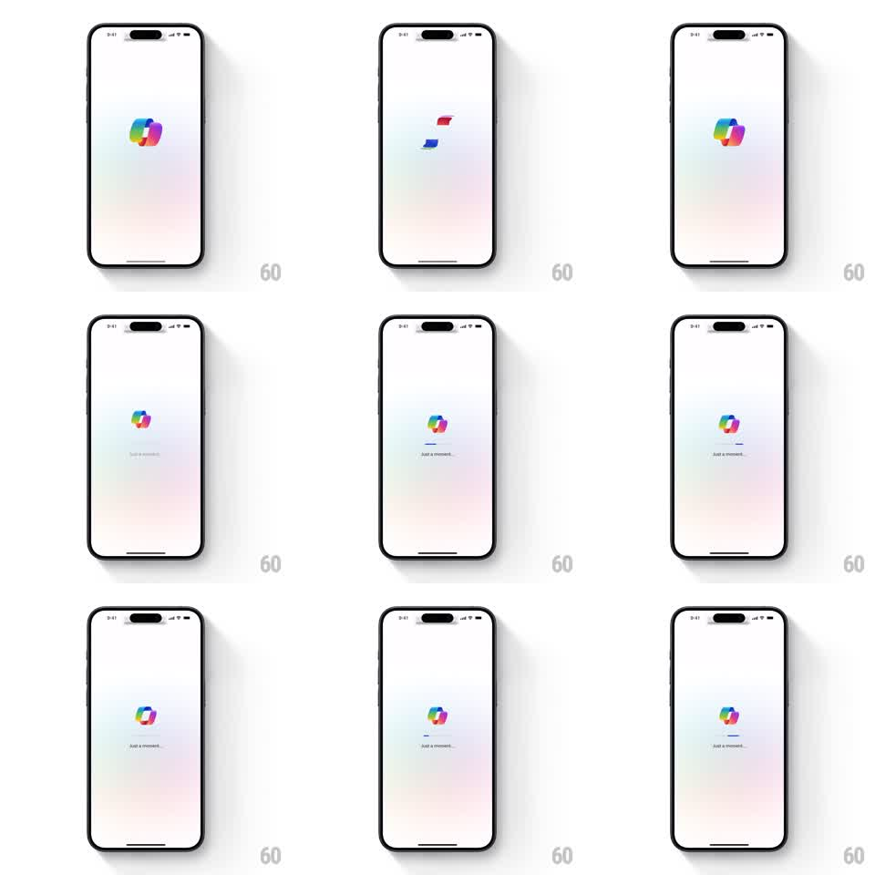

Media
Frame-by-frame

Rebuild this animation 1:1: Microsoft Copilot's splash - the colorful ribbon logo morphs and splits on a soft pastel field, then settles above a thin loading bar with "Just a moment..." copy.

Rebuild this animation 1:1: Microsoft Copilot's splash - the colorful ribbon logo morphs and splits on a soft pastel field, then settles above a thin loading bar with "Just a moment..." copy. ## Integration Integration: stack-agnostic spec - springs given as stiffness/damping, timed motions as duration + curve; map every value to your framework and animation library of choice. ## Scene Near-white screen with a faint pastel gradient wash at the bottom. Center: the Copilot logo - a looping ribbon of blended rainbow color. Below it (later): a hairline progress bar and small gray "Just a moment..." text. ## Motion spec Pattern: morphing logo into loading state. - The logo opens with a gentle scale-in (0.9 to 1, spring ~280/24) while its ribbon continuously morphs - the loop inflates, twists, and breathes (blob path interpolation, ~2.5s period). - Mid-sequence the ribbon briefly splits into two separate ribbon shards (red-toned upper, blue-toned lower) that drift apart ~30px, then pull back and rejoin into the full mark (spring ~240/22). - The loading bar fades in below the logo (200ms), then fills left-to-right over ~2s (ease-in-out); "Just a moment..." fades in with it. - While loading, the logo settles into a slow idle morph (same blob motion, reduced amplitude). - Completion: logo and bar fade up and out (250ms) as the app content crossfades in. ## Calibration - The logo's colors are soft-blended gradients inside the ribbon shape, not flat segments. - The bar is hairline-thin and neutral gray - it must not compete with the logo's color. ## Reduced motion Static logo, bar fills without morph. ## Don't miss - The split-and-rejoin beat is the signature moment; don't skip or rush it. - The pastel wash at the screen's bottom stays constant - only the logo and loading UI move.